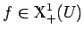

Inhalt Index DeskTop Bronstein

 Dynamische Systeme und Chaos Gewöhnliche Differentialgleichungen und Abbildungen Strukturelle Stabilität (Robustheit) Strukturstabile Differentialgleichungen
Dynamische Systeme und Chaos Gewöhnliche Differentialgleichungen und Abbildungen Strukturelle Stabilität (Robustheit) Strukturstabile Differentialgleichungen


Die ebene Differentialgleichung (17.1) mit  sei strukturstabil. Dann gilt:
sei strukturstabil. Dann gilt:
Satz von Andronov und Pontryagin: Die ebene Differentialgleichung (17.1) mit  ist genau dann strukturstabil, wenn gilt: